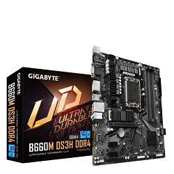
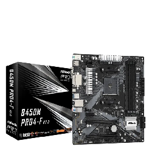
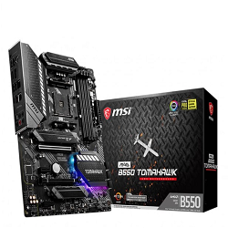
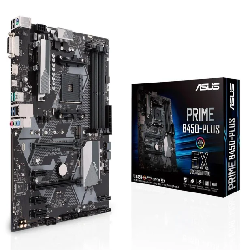

|
Gigabyte B660M DS3H DDR4 Obsługiwane procesory:Intel Core i9, Intel Core i7, Intel Core i5, tel Core i3, Intel Celeron, Intel Pentium Format:mATX Gniazdo procesora:Socket 1700 Chipset:Intel B660 SKLEP  |
ASRock B450M Obsługiwane procesory:AMD Ryzen™ Format:mATX Gniazdo procesora:Socket AM4 Chipset:AMD B450 SKLEP  |
|
MSI MAG B550 TOMAHAWK Obsługiwane procesory:AMD Ryzen™ Format:ATX Gniazdo procesora:Socket AM4 Chipset:AMD B550 SKLEP  |
ASUS PRIME B450-PLUS Obsługiwane procesory:AMD Ryzen™ Format:ATX Gniazdo procesora:Socket AM4 Chipset:AMD B450 SKLEP  |